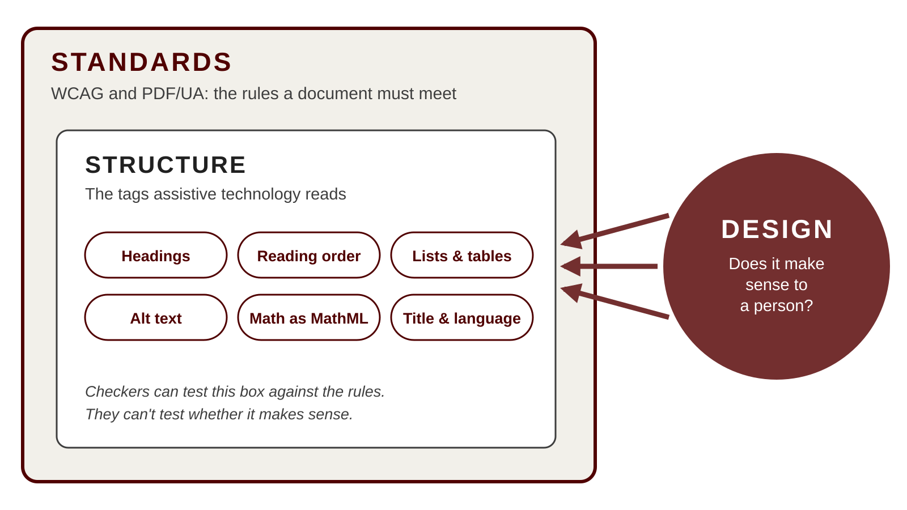
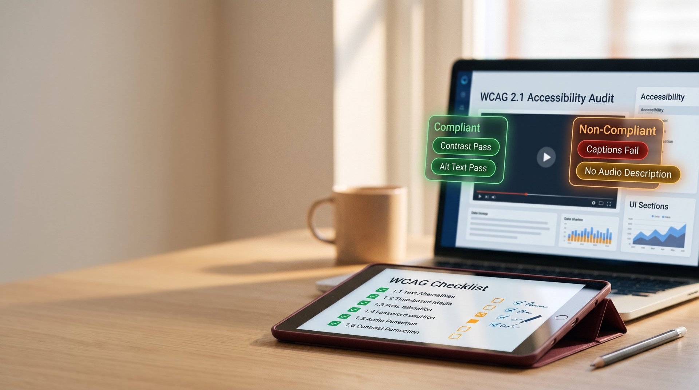
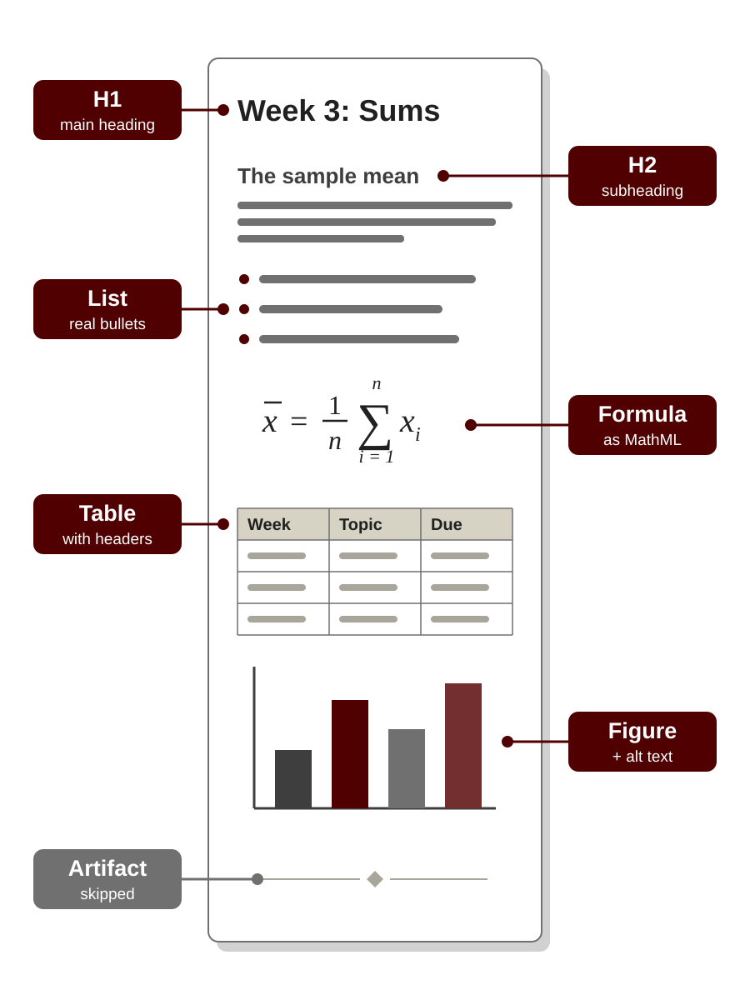
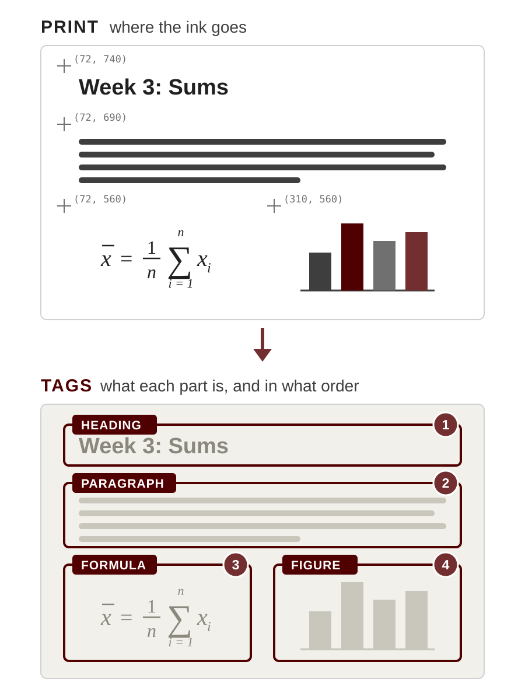
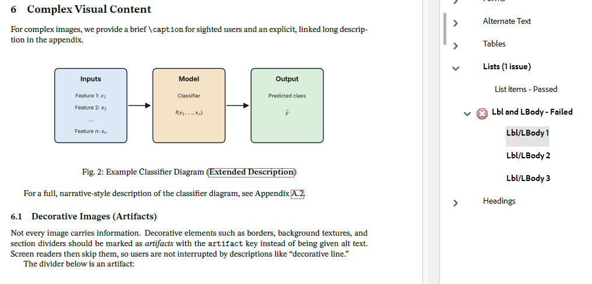

Accessible Media: Beyond the Checker
Why passing an accessibility checker is not the same as being accessible
Gerry Pedraza & Christine Roach
Last updated: 10/23/26
Objectives
- Explain what accessibility means for distributed course media and why it is required
- Identify the purpose of the building blocks of an accessible document: headings, reading order, alt text, tables and equations
- Explain why PDFs, and LaTeX-created files in particular, are harder to make accessible, and what PDF 2.0 changes
- Analyze how accessibility checkers work: why a document can pass and still fail students, or be flagged when it is correct
- Distinguish technical compliance from instructional design in documents and video
Agenda
- What Accessibility Is and Why It Matters
- Standards for Accessible Media
- Structure: What Makes a Document Accessible
- Why Equations in PDFs Are Harder
- What Checkers Can and Can't Do
- Designing for Meaning
Part 1
What Accessibility Is and Why It Matters
What we mean by accessibility, what the law asks, and how we get there.
What Is Accessibility?
- The same information, through an equally effective experience, with comparable ease
- Who it serves: blind and low-vision students, dyslexia, motor disabilities, deaf and hard of hearing, students on phones, students who never disclose, all of us
The Goal: Equal Access
- ADA Title II: no one excluded from a public university's programs because of a disability
- DOJ rule (April 2024) sets the technical bar: WCAG 2.1 Level AA
- Covers what we offer students online: web pages, documents, and videos
- Deadline extended to April 26, 2027; requirements unchanged
How We Get There: Every Document Must Be Prepared
- Word, PowerPoint, PDF, LaTeX, and video: accessibility is built in while authoring, not added at the end
- Accommodation is reactive and individual; accessibility is proactive and benefits everyone
Three Layers: Standards, Structure, Design


Part 2
Standards for Accessible Media
What the standards ask of web pages, documents, and video, and where to do the work.
WCAG: The Measuring Stick
- Perceivable: can they get the content? (a graph has alt text; a video has captions)
- Operable: can they move through it? (jump by headings, use only a keyboard)
- Understandable: does it make sense? (clear headings, consistent layout, notation explained)
- Robust: does it work with their tools? (real tags a screen reader can read)
Document Standards:
How a PDF Meets WCAG
- WCAG says what a student must be able to do; PDF/UA (Universal Accessibility) says how a PDF makes it possible
- PDF/UA-1 builds on PDF 1.7; PDF/UA-2 builds on PDF 2.0
- PDF 2.0 is the file format: it makes accessibility possible but doesn't require it
- PDF/UA-2 is the rulebook: tags, alt text, a title, and a language are required
- A PDF 2.0 file isn't automatically PDF/UA-2: the materials are not the building code
Design the Source, Don't Patch the PDF
- Accessibility is decided when you write the Word, PowerPoint, or LaTeX file
- Fixing a finished PDF is slow, and every fix is lost when you re-export
- Ally creates alternative formats but never changes your original file
- The same inaccessible file carries into every future semester
- Fix it once in the source, and it stays fixed
Part 3
Structure: What Makes a Document Accessible
The building blocks that let assistive technology read a document.
The Building Blocks
- Headings in a logical hierarchy
- Reading order that matches the meaning
- Real lists and tables with header cells
- Alt text for images; artifacts for decoration
- Equations as MathML, not pictures

Part 4
Why Equations in PDFs Are Harder
PDF Was Built for Print
- PDF describes where ink goes on a page; structure was added later through tags
- PDF 2.0 rebuilt that structure, which is what makes real math possible

Equations: Pictures or Structure
- As a picture with alt text: one flat sentence, nothing to navigate
- As MathML: read and navigate term by term, in speech or braille
- PDF/UA-2 requires math as MathML; PDF/UA-1 only allowed alt text
LaTeX: A Preamble Makes the Difference
- LaTeX output is a PDF, so it inherits PDF's challenges
- A preamble based on the LaTeX Tagging Project turns on the tags assistive technology uses
- Template available in the resources at the end
Part 5
What Checkers Can and Can't Do
How Checkers Work
- They find items and test them against rules
- They can tell that alt text exists, not whether it is useful
Checkers and PDF 2.0
- Ally, Panorama and Acrobat do not fully support PDF 2.0 / UA-2 (vendor-confirmed)
- Result: false flags in both directions
Passes the Checker, Fails the Student: Reading Order
- A PowerPoint exported to PDF: every element tagged, read in the wrong sequence
Passes the Checker, Fails the Student: Headings
- A Word document jumping from Heading 1 to Heading 3 misleads users about the hierarchy
Passes the Checker, Fails the Student: Alt Text
- "A parabola": present, passing, and empty of instructional value
Fails the Checker, Serves the Student: PDF 2.0
- A correct PDF/UA-2 document with MathML flagged as missing alt text
Example: Acrobat Flags a Correct Caption

Acrobat's "Lbl and LBody" check expects a label only inside a list item, such as "1." or a bullet.
In this PDF 2.0 file, "Fig. 2:" is tagged as the label of its caption, which PDF 2.0 allows. A screen reader can tell the figure number apart from the caption text.
Acrobat's checker does not support PDF/UA-2, so it judges the file by older rules. The tagging is correct; the check is not.
A checker can tell you it's tagged, not that it makes sense
Part 6
Designing for Meaning
Alt Text That Teaches
- "A parabola" vs. "the vertex at (2, -1) is the minimum, which is the point of this example"
Short Alt Text, Detailed Extended Description
- Keep alt text to about 120-150 characters; screen readers read it in one go
- Put details in a linked extended description; a tagged data table for charts
Video: Captions and Description
- Accurate captions: review auto-captions, especially math and technical terms
- Gold standard: a dedicated audio description track, written and voiced by trained describers
- Practical path: describe as you go; it is a skill that takes practice, and it can meet the requirement
- Say what is on screen and why it matters: replace "as you can see here" with the instructional point
Video: On-Screen Content
- On-screen text: large (about 24 pt or more), high contrast, clear of the caption area
- Complex content (tables, charts, reference data): provide an accessible version as an attachment, and mention it aloud
- A textbook page reference works only if the student has an accessible copy
- Still say the key takeaway aloud
Tags make content reachable; design makes it meaningful
Where to Start
- New and active course materials first, then syllabi and frequently used documents
- Check with a screen reader, not only a checker
Conclusion
- Accessibility is prepared, not patched
- Checkers find items; people judge meaning
- Design for the student, not the score
Resources and Contact
- Beamer to LTX Converter
- beam2ltx.gerrypedraza.com
- LaTeX Tagging Project
- latex3.github.io/tagging-project
Thank You
Questions?